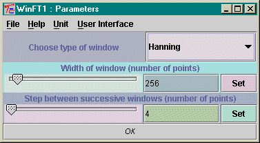

Input Types : SampleSet
Date : 5 January 2001
Output Types : TimeFrequency
This can in turn be mapped to a color map, for example by ImageMapper, and displayed.
The user can choose the kind of window function, or input a window function at the second (optional) input node of the unit. The user can also choose the length of the window, and the size of the step as the window moves along the whole data set. The first transform places the start of the window at the first data point of the input. The last transform is the last one that can be done without wrapping the window around to the front of the input data set.
The built-in windows are defined by the following names and associated functions, all of which are given here on the domain (-0.5, 0.5):
If the user inputs a window, it is also normalized before being used.
The window is multiplied into the data set in the appropriate domain,
and a Fourier transform is performed with a length equal to the size of
the window. Then the window is stepped along and the process is repeated.

The first choice box offers the user the choice of the windows described above. If the user inputs a window function at the second input node (see below) then this choice is ignored. The second parameter is an integer which is the width in data points of the chosen window. The user should choose this in the light of the size of the input data set. If the width is longer than the input, only one Fourier transform will be performed. The third parameter is the step between successive windows. The difference between the two integer parameters is the overlap between successive Fourier transforms.
If the user uses the node dialog box to choose two input nodes, then
a VectorType
data set may be routed to the second input node and this will be used as
the window, after normalizing it. The window type and width parameters
will be ignored, but the step will be used as selected in the parameter
window. The input window could be constructed, for example, using MathCalc.